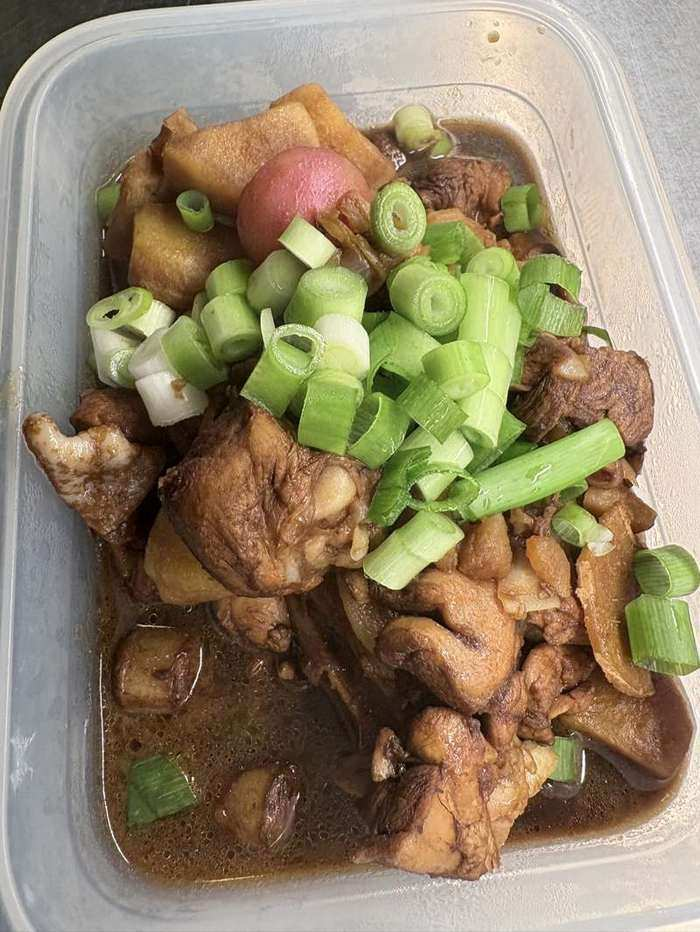

可乐鸡翅 DIY改版
2026-10-16 首做成功：鸡腿400g不够用香肠补量、没米饭用土豆当主食、零度可乐、葱花点睛。

食材
- 鸡翅✎ 芬兰超市有时买不到鸡翅→用带皮鸡胸肉代替（带皮比纯鸡胸好吃）；不用鸡腿肉：难炖透、难去骨 500克
- 可乐✎ 零度可乐代替，味道没差别 1罐（330ml）
- 生抽 2大勺、料酒 1大勺、姜片 5片
- 土豆✎ 没米饭时加土豆等配菜一锅煮，没问题 2个（可选配菜）
- 葱花✎ 画龙点睛之笔，一定不能省！ 1根
做法
- 鸡翅对半切开（或带皮鸡胸肉切大块），冷水下锅焯水去沫，捞出。
- 热锅少油，下姜片爆香，下鸡肉煎至表面微黄。
- 加生抽、料酒翻炒上色。
- 倒入可乐没过食材，大火烧开转小火，盖盖15分钟。
- 土豆切滚刀块，中途加入同煮至软烂入味。
- 大火收汁至浓稠，撒葱花出锅。